[11-5] 硬件SPI读写W25Q64 — 学习笔记
- 课程：江协科技《STM32入门教程-2023版 细致讲解 中文字幕》
- 视频：BV1th411z7sn?p=40，26:38（1598 秒）
- 素材：228 帧关键帧（每 7 秒，宽 1280px）+ PP-OCRv4 画面硬字幕 OCR（540 段）；关键截图 14 张随笔记收录（源图在
vidsum_out/stm32_p40/frames/，站内图片在assets/images/stm32-40/） - 字幕情况：该集 B 站没有 CC/AI 字幕，文本由画面烧录的中文字幕 OCR 得到（source=subtitle-ocr）；错字主要是
SPI→ 「SPL/SPl」（12 处）、MySPI→ 「MvSPI/MvSPL」、推挽→ 「推换」（3 处）、引脚→ 「弓脚」（2 处）、I2C→ 「12C/2C」、数据→ 「数居」、寄存器→ 「寄存哭」，并混入编译/下载输出（Build Time Elapsed、Flash Load finished at …）——这些不是口述内容，已剔除/校正（清单见文末「存疑」）。 - 本集定位：这是模块 11 的代码课（下）——把上一集的软件 SPI 工程（
11-1 软件SPI读写W25Q64）改造成硬件 SPI（11-2 硬件SPI读写W25Q64），只改通信层MySPI.c，W25Q64 业务层一行不改。结尾 26:34「那我们 SPI 的课程到这里也就全部结束了」，无下节预告（模块 11 结束）。
一句话结论
接线完全不用改：因为上一集软件 SPI 就是特意接在硬件 SPI1 的引脚上——查引脚定义表可知 SPI1 默认复用：NSS=PA4、SCK=PA5、MISO=PA6、MOSI=PA7（SPI2 是 PB12～PB15；SPI1 还能重映射到 PA15/PB3/PB4/PB5，但那几个脚默认是 JTAG 调试端口、要先解除调试复用，本集不用）。改造思路：任务只是把底层 MySPI.c 的初始化与时序执行从软件实现换成硬件实现——基于通信层的 W25Q64 业务代码不需要任何修改，这正是分层封装/代码隔离的好处。本集与 [10-2] 硬件 I2C 那集不同：不删除 MySPI 模块——因为这里用的是非连续传输方案（简单、易封装），直接在原模块里改即可：删掉 MySPI_W_SCK、MySPI_W_MOSI、MySPI_R_MISO 三个软件翻转引脚的函数（改由硬件外设控制），保留 MySPI_W_SS（SS 仍用 GPIO 软件模拟）以及 MySPI_Start/MySPI_Stop（它们内部就是拉低/拉高 SS），再重写 MySPI_Init 与 MySPI_SwapByte 的函数体。MySPI_Init 四步：① 开时钟：RCC_APB2PeriphClockCmd(RCC_APB2Periph_GPIOA, ENABLE) + RCC_APB2PeriphClockCmd(RCC_APB2Periph_SPI1, ENABLE)（SPI1 是 APB2 外设）；② 配置 GPIO：PA4＝通用推挽 GPIO_Mode_Out_PP（SS 由软件控制）、PA5｜PA7＝复用推挽 GPIO_Mode_AF_PP（SCK/MOSI 由外设控制）、PA6＝上拉输入 GPIO_Mode_IPU（MISO 是外设输入，没有「复用输入」这种模式）；③ SPI_InitTypeDef 九个成员（顺序随意）：SPI_Mode = SPI_Mode_Master、SPI_Direction = SPI_Direction_2Lines_FullDuplex、SPI_DataSize = SPI_DataSize_8b、SPI_FirstBit = SPI_FirstBit_MSB、SPI_BaudRatePrescaler = SPI_BaudRatePrescaler_128、SPI_CPOL = SPI_CPOL_Low、SPI_CPHA = SPI_CPHA_1Edge、SPI_NSS = SPI_NSS_Soft、SPI_CRCPolynomial = 7 → SPI_Init(SPI1, &SPI_InitStructure)；④ SPI_Cmd(SPI1, ENABLE) 使能外设，再 MySPI_W_SS(1) 让 SS 默认输出高（不选中从机）。其中 SPI_BaudRatePrescaler_128 表示 SCK ＝ PCLK/128（共 8 档：2/4/8/16/32/64/128/256，分频越大越慢）；因为用的是 SPI1（APB2）所以按 72MHz/128 计算（按公式推算约为 562.5kHz）；若换成 SPI2 则要按 36MHz 算。SPI_CPOL_Low（CPOL=0）+ SPI_CPHA_1Edge（CPHA=0）＝ SPI 模式 0——W25Q64 模式 0 与模式 3 都兼容，本集选模式 0。MySPI_SwapByte 改为硬件实现（四步）：① while (SPI_I2S_GetFlagStatus(SPI1, SPI_I2S_FLAG_TXE) != SET); 等发送寄存器空（TXE=1 才写）→ ② SPI_I2S_SendData(SPI1, ByteSend); 写 DR（数据进 TDR，之后自动转入移位寄存器并自动生成波形，不需要额外调用任何「启动传输」函数）→ ③ while (SPI_I2S_GetFlagStatus(SPI1, SPI_I2S_FLAG_RXNE) != SET); 等接收完成（发送与接收同步，接收移位完成即表示发送完成）→ ④ return SPI_I2S_ReceiveData(SPI1); 读 DR 取回交换到的数据。不再需要手动给 SCK/MOSI 置高低电平、也不用关心数据位怎么移——这些都由硬件电路自动完成。两个关键注意点：① 硬件 SPI 必须「先发送」才能「接收」——只调用接收函数时序不会动，只有往 TDR 写数据才会触发移位；② TXE/RXNE 不需要手动清标志——手册 23.3.7 写明「当写入 SPI_DR 时，TXE 标志被清除」「读 SPI 数据寄存器可以清除此标志（RXNE）」，而我们的代码顺序正好是「等 TXE→写 DR」和「等 RXNE→读 DR」，所以顺带就清除了（对比 STM32 中大多数标志位（如中断标志）仍需手动清除）。while 死等没有加超时：作者说只要外设电路不损坏、TDR 里的数据就一定会转入移位寄存器，不会卡死（不放心也可以自己加）。现象：OLED 显示 MID:EF DID:4017、W:01 02 03 04、R:01 02 03 04——与软件 SPI 版本完全一致，说明改造成功。
0. 本集定位：代码课（软件 SPI 工程 → 硬件 SPI，只改通信层）
- 本集不写新功能：复制上一集工程
11-1 软件SPI读写W25Q64→ 改名11-2 硬件SPI读写W25Q64； - 只改
MySPI.c：初始化、时序执行从软件实现（手动翻转电平）换成硬件实现（SPI 外设）； - W25Q64 驱动层/业务层一行不改——「具体通信是怎么实现的，是影响不到上层代码的」；
- 片尾 26:34「那我们 SPI 的课程到这里也就全部结束了」，无下节预告。
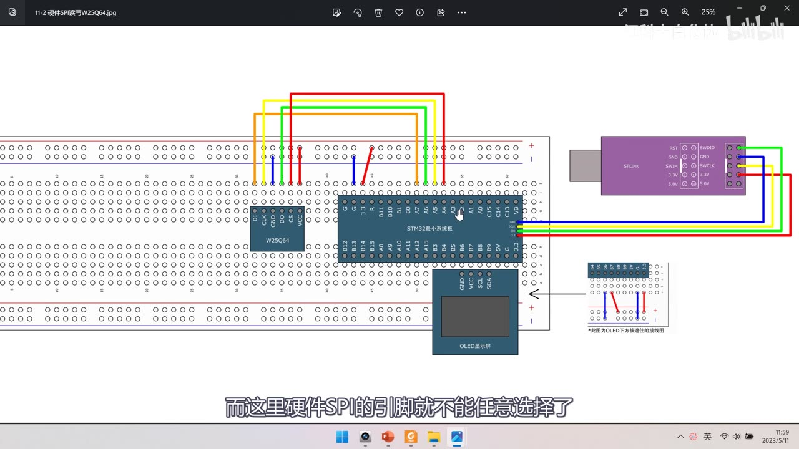
图 1：接线图 11-2 硬件SPI读写W25Q64——与上一集软件 SPI 完全相同（W25Q64 模块、STM32 最小系统板、OLED、ST-Link 之间用 4 根飞线接 PA4～PA7 区域），右下角注明 *此图为OLED下方被遮挡的接线图；字幕「而这里硬件SPI的引脚就不能任意选择了」
1. 接线与引脚选择
- 接线不用改：上一集软件 SPI 就是特意把引脚放在硬件 SPI1 的引脚上，所以硬件版沿用同一套接线；
- 软件 SPI 的引脚可以任意选，硬件 SPI 的引脚不能任意选——凡涉及 STM32 内部硬件外设的引脚，基本都要查引脚定义表（硬件没有软件那么灵活）；
- 查「默认复用功能」栏（以 STM32F103C8T6 引脚定义表为例）：
| 外设 | NSS | SCK | MISO | MOSI |
|---|---|---|---|---|
| SPI1（默认） | PA4 | PA5 | PA6 | PA7 |
| SPI2 | PB12 | PB13 | PB14 | PB15 |
| SPI1（重映射） | PA15 | PB3 | PB4 | PB5 |
- NSS 可以不用硬件引脚：上一集已经得出结论——SS 用软件 GPIO 模拟即可，没必要必须接在 PA4；但其他三个脚（SCK/MISO/MOSI）必须用 PA5/PA6/PA7；
- 重映射提醒：
PA15(JTDI)、PB3(JTDO)、PB4(NJTRST) 默认是 JTAG 调试端口，要用它们的 GPIO 功能或重映射外设功能，必须先解除调试端口复用（方法见视频 6-4）；本集不用重映射； - 本集方案：用 SPI1，SCK=PA5、MOSI=PA7、MISO=PA6，NSS 仍用 PA4 的 GPIO 软件模拟；模块 VCC/GND 供电——接线与软件版一模一样。
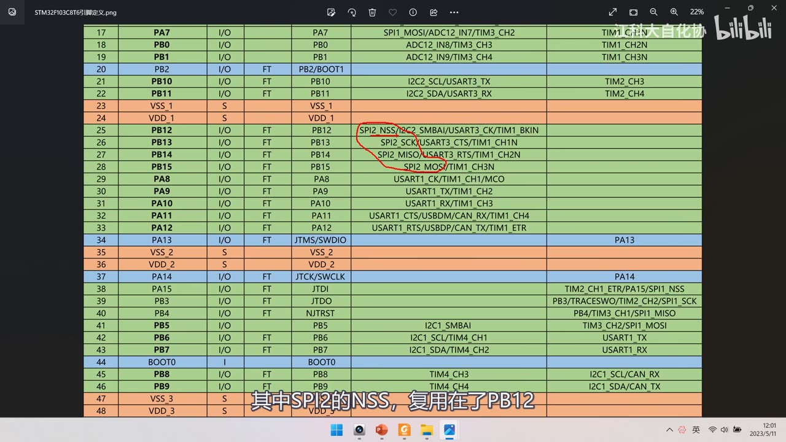
图 2：引脚定义表（STM32F103C8T6）——17 行 PA7（SPI1_MOSI/ADC12_IN7/TIM3_CH2）；25～28 行 PB12（SPI2_NSS/I2C2_SMBAI/USART3_CK/TIM1_BKIN，红圈标出）、PB13（SPI2_SCK）、PB14（SPI2_MISO）、PB15（SPI2_MOSI）；38～41 行 PA15（JTDI / TIM2_CH1_ETR/PA15/SPI1_NSS）、PB3（JTDO / PB3/TRACESWO/TIM2_CH2/SPI1_SCK）、PB4（NJTRST / PB4/TIM3_CH1/SPI1_MISO）、PB5（SPI1_MOSI）；字幕「其中SPI2的NSS，复用在了PB12」
2. 改造思路：保留 MySPI 模块，只换通信层
- 任务：修改底层
MySPI.c文件里的初始化与时序执行步骤，由软件实现改成硬件实现； - 上层不动：基于通信层的业务代码（
W25Q64.c、main.c）不需要任何修改——「具体通信是怎么实现的，是影响不到上层代码的」； - 为什么这次不删模块（和 [10-2] 硬件 I2C 那集不同）：本集用非连续传输方案（简单、容易封装），直接在
MySPI模块里改最方便；作者也说「模块是否移除、分层还是都放一起，取决于你对工程的规划」，保留这个模块很方便； - 具体删/留：
- 删掉：
MySPI_W_SCK、MySPI_W_MOSI、MySPI_R_MISO（软件控制 SPI 通信引脚的三个函数，由硬件外设代替）； - 保留：
MySPI_W_SS（SS 仍软件模拟）、MySPI_Start/MySPI_Stop（内部就是W_SS(0)/W_SS(1)）； - 重写：
MySPI_Init的内容 → SPI 外设初始化；MySPI_SwapByte的内容 → 硬件实现。
- 删掉：
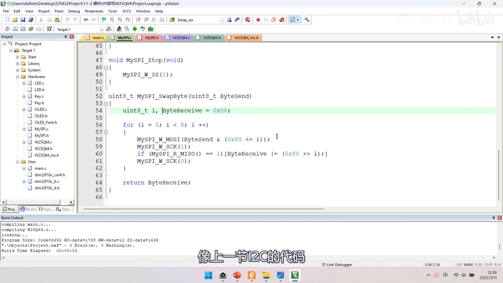
图 3：改造前的 MySPI.c（软件版）——MySPI_Stop 里 MySPI_W_SS(1);，MySPI_SwapByte 是掩码法的软件实现（for (i = 0; i < 8; i ++) { MySPI_W_MOSI(ByteSend & (0x80 >> i)); MySPI_W_SCK(1); if (MySPI_R_MISO() == 1) { ByteReceive |= (0x80 >> i); } MySPI_W_SCK(0); }）；工程已是 11-2 硬件SPI读写W25Q64；字幕「像上一节I2C的代码」
3. 初始化流程（对照 SPI 基本结构图）
四步：
- 开启 SPI 和 GPIO 的时钟；
- 初始化 GPIO：SCK 和 MOSI 是硬件外设控制的输出信号 → 复用推挽输出（
AF_PP）；MISO 是硬件外设的输入信号 → 上拉输入（IPU）（因为输入设备可以有多个，不存在「复用输入」这种东西，普通 GPIO 和外设都能读）；SS 是软件控制的输出信号 → 通用推挽输出（Out_PP）； - 配置 SPI 外设：用
SPI_InitTypeDef结构体选参数（数据帧 8/16 位、高位/低位先行、主/从、模式等）； - 开关控制：调用
SPI_Cmd(SPI1, ENABLE)使能 SPI。
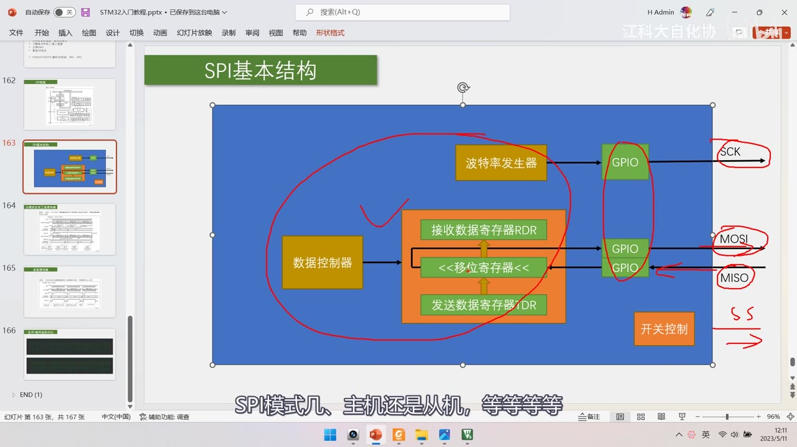
图 4：PPT「SPI基本结构」+ 红笔标注——数据控制器 ↔ 接收数据寄存器 RDR / <<移位寄存器<< / 发送数据寄存器 TDR；波特率发生器 → GPIO → SCK；GPIO → MOSI、MISO（红圈圈出 GPIO 与引脚）；右下「开关控制」，右侧红笔写 SS 引出方向；字幕「SPI模式几、主机还是从机，等等等等」
4. SPI 库函数
打开 stm32f10x_spi.h（spi.c 里的实现）——很多函数带 I2S_ 前缀，因为 SPI 和 I2S 共用（当它不存在即可）：
| 函数 | 作用 | 使用频率 |
|---|---|---|
SPI_I2S_DeInit |
恢复缺省配置 | 少 |
SPI_Init |
初始化（按结构体参数配置寄存器） | 重点 |
SPI_StructInit |
结构体变量初始化（填默认值） | 少 |
SPI_Cmd |
外设使能 | 重点 |
SPI_I2S_ITConfig |
中断使能 | 少 |
SPI_I2S_DMACmd |
DMA 使能 | 少 |
SPI_I2S_SendData |
写 DR（数据写入 TDR） | 重点 |
SPI_I2S_ReceiveData |
读 DR（返回 RDR 数据） | 重点 |
SPI_NSSInternalSoftwareConfig / SPI_SSOutputCmd |
NSS 配置 | 少 |
SPI_DataSizeConfig |
8/16 位数据帧配置 | 少 |
SPI_TransmitCRC / SPI_CalculateCRC / SPI_GetCRC |
CRC 相关 | 少（不用） |
SPI_I2S_GetFlagStatus |
获取标志位状态（TXE/RXNE） | 重点 |
SPI_I2S_ClearFlag / GetITStatus / ClearITPendingBit |
清标志/中断状态 | 本项目不用 |
SPI_I2S_SendData内部代码：把参数Data赋值给SPIx->DR——就是写数据到发送数据寄存器 TDR；SPI_I2S_ReceiveData内部代码：把SPIx->DR读出来return回去——返回值就是接收数据寄存器 RDR；- 本项目主要用：
SPI_Init、SPI_Cmd、SPI_I2S_SendData、SPI_I2S_ReceiveData、SPI_I2S_GetFlagStatus。
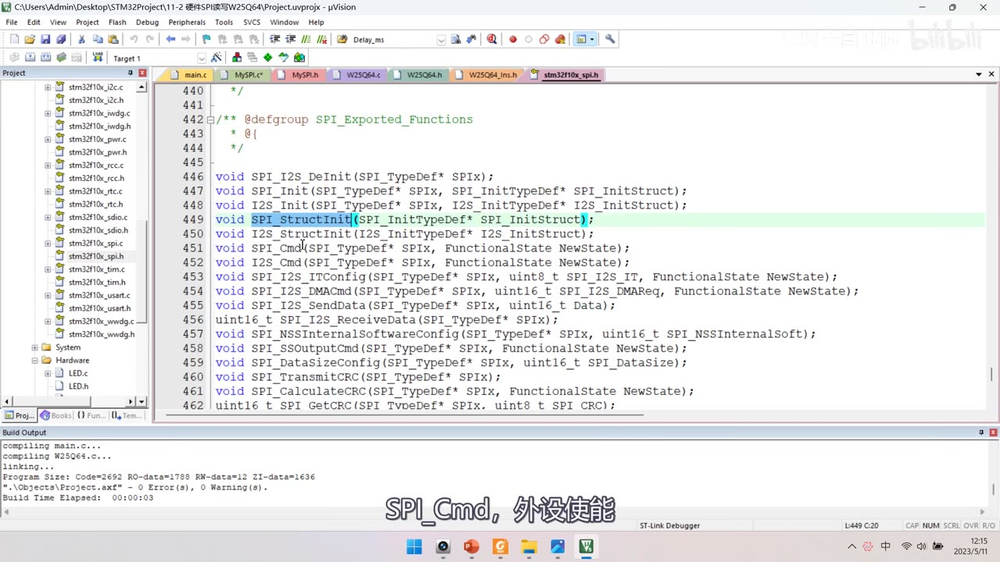
图 5：stm32f10x_spi.h 的库函数声明列表——SPI_I2S_DeInit、SPI_Init、I2S_Init、SPI_StructInit（高亮）、I2S_StructInit、SPI_Cmd、I2S_Cmd、SPI_I2S_ITConfig、SPI_I2S_DMACmd、SPI_I2S_SendData、SPI_I2S_ReceiveData、SPI_NSSInternalSoftwareConfig、SPI_SSOutputCmd、SPI_DataSizeConfig、SPI_TransmitCRC、SPI_CalculateCRC、SPI_GetCRC 等；字幕「SPI_Cmd，外设使能」
5. MySPI_Init 代码
void MySPI_Init(void)
{
/* ① 开时钟：GPIOA + SPI1（SPI1 是 APB2 外设） */
RCC_APB2PeriphClockCmd(RCC_APB2Periph_GPIOA, ENABLE);
RCC_APB2PeriphClockCmd(RCC_APB2Periph_SPI1, ENABLE);
/* ② GPIO：SS 软件控制 → 通用推挽；SCK/MOSI → 复用推挽；MISO → 上拉输入 */
GPIO_InitTypeDef GPIO_InitStructure;
GPIO_InitStructure.GPIO_Mode = GPIO_Mode_Out_PP; /* PA4：SS */
GPIO_InitStructure.GPIO_Pin = GPIO_Pin_4;
GPIO_InitStructure.GPIO_Speed = GPIO_Speed_50MHz;
GPIO_Init(GPIOA, &GPIO_InitStructure);
GPIO_InitStructure.GPIO_Mode = GPIO_Mode_AF_PP; /* PA5/PA7：SCK/MOSI */
GPIO_InitStructure.GPIO_Pin = GPIO_Pin_5 | GPIO_Pin_7;
GPIO_InitStructure.GPIO_Speed = GPIO_Speed_50MHz;
GPIO_Init(GPIOA, &GPIO_InitStructure);
GPIO_InitStructure.GPIO_Mode = GPIO_Mode_IPU; /* PA6：MISO */
GPIO_InitStructure.GPIO_Pin = GPIO_Pin_6;
GPIO_InitStructure.GPIO_Speed = GPIO_Speed_50MHz;
GPIO_Init(GPIOA, &GPIO_InitStructure);
/* ③ SPI 外设初始化：9 个成员 */
SPI_InitTypeDef SPI_InitStructure;
SPI_InitStructure.SPI_Mode = SPI_Mode_Master;
SPI_InitStructure.SPI_Direction = SPI_Direction_2Lines_FullDuplex;
SPI_InitStructure.SPI_DataSize = SPI_DataSize_8b;
SPI_InitStructure.SPI_FirstBit = SPI_FirstBit_MSB;
SPI_InitStructure.SPI_BaudRatePrescaler = SPI_BaudRatePrescaler_128;
SPI_InitStructure.SPI_CPOL = SPI_CPOL_Low;
SPI_InitStructure.SPI_CPHA = SPI_CPHA_1Edge;
SPI_InitStructure.SPI_NSS = SPI_NSS_Soft;
SPI_InitStructure.SPI_CRCPolynomial = 7;
SPI_Init(SPI1, &SPI_InitStructure);
/* ④ 使能 SPI + SS 默认高（不选中从机） */
SPI_Cmd(SPI1, ENABLE);
MySPI_W_SS(1);
}
5.1 时钟与 GPIO
- 开两个时钟：
RCC_APB2Periph_GPIOA（GPIO 用 A 端）和RCC_APB2Periph_SPI1（SPI1 挂 APB2）； - PA4 =
GPIO_Mode_Out_PP（通用推挽）：SS 还是软件模拟，所以要能被程序控制； - PA5｜PA7 =
GPIO_Mode_AF_PP（复用推挽）：SCK 和 MOSI 由硬件外设控制，必须配复用输出； - PA6 =
GPIO_Mode_IPU（上拉输入）：MISO 是外设输入，配成输入即可（不需要「复用输入」）。
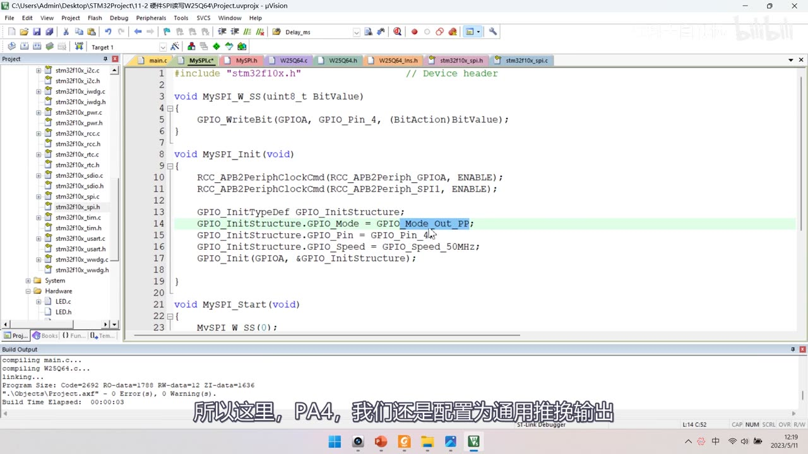
*图 6：MySPI.c 初始化开头——#include "stm32f10x.h"、MySPI_W_SS 用 GPIO_WriteBit(GPIOA, GPIO_Pin_4, (BitAction)BitValue)；MySPI_Init 里 RCC_APB2PeriphClockCmd(RCC_APB2Periph_GPIOA, ENABLE); + RCC_APB2PeriphClockCmd(RCC_APB2Periph_SPI1, ENABLE);，PA4 GPIO_Mode_Out_PP、Pin_4、50MHz、GPIO_Init；字幕「所以这里，PA4，我们还是配置为通用推挽输出」*
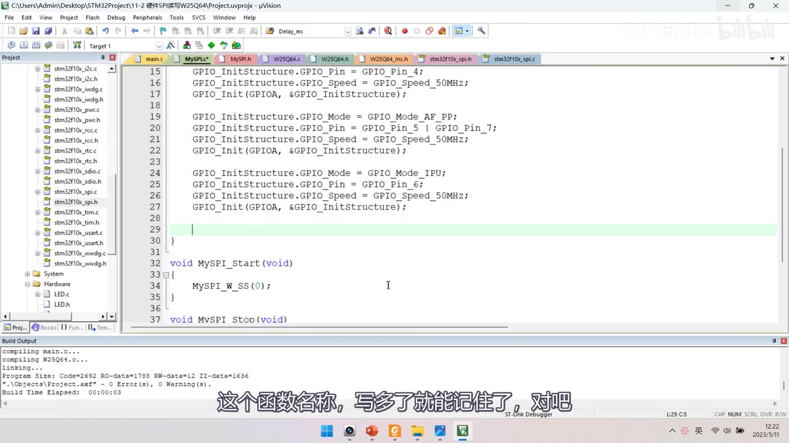
*图 7：GPIO 三段配置全貌——上一段 Pin_4 / Out_PP，本段 GPIO_Mode = GPIO_Mode_AF_PP（复用推挽）、GPIO_Pin = GPIO_Pin_5 | GPIO_Pin_7（高亮行），再接 GPIO_Mode_IPU、Pin_6，均 50MHz；字幕「这个函数名称，写多了就能记住了，对吧」*
5.2 SPI_InitTypeDef 九个成员
| 成员 | 取值 | 含义 |
|---|---|---|
SPI_Mode |
SPI_Mode_Master / SPI_Mode_Slave |
主/从模式，本集用主机 |
SPI_Direction |
SPI_Direction_2Lines_FullDuplex 等 4 个 |
方向：双线全双工（本集用）/ 单线半双工收 / 单线半双工发 / 双线只收（用来裁剪 SPI） |
SPI_DataSize |
SPI_DataSize_8b / _16b |
8/16 位数据帧，本集 8 位 |
SPI_FirstBit |
SPI_FirstBit_MSB / _LSB |
高位先行/低位先行，本集 MSB |
SPI_BaudRatePrescaler |
_2/_4/_8/_16/_32/_64/_128/_256 |
波特率预分频：SCK ＝ PCLK / 分频 |
SPI_CPOL |
SPI_CPOL_Low / _High |
时钟极性：空闲电平（Low＝CPOL=0） |
SPI_CPHA |
SPI_CPHA_1Edge / _2Edge |
时钟相位：第几个边沿采样（1Edge＝CPHA=0） |
SPI_NSS |
SPI_NSS_Soft / _Hard |
NSS 软件/硬件模式，本集软件 |
SPI_CRCPolynomial |
任意（默认 7） | CRC 多项式，不用 CRC，随便填 |
SPI_Direction的最后两个取值其实不是这个结构体的参数（是和别的函数参数重名了，提示列表里会混进来）；- 波特率：8 档分频（2/4/8/16/32/64/128/256），分频越大 SCK 越慢；本集选 128，因为用 SPI1（APB2，PCLK＝72MHz）所以按 72MHz/128 计算（按公式推算约 562.5kHz）；若用 SPI2 则按 36MHz 算；
- CPOL/CPHA：
SPI_CPOL_Low＝CPOL=0、SPI_CPHA_1Edge＝CPHA=0 → SPI 模式 0；模式 0 和模式 3 都兼容 W25Q64，本集选模式 0； - NSS：选软件 NSS（
SPI_NSS_Soft），因为 SS 用 GPIO 模拟； - 作者提醒：这些参数大部分不用改，实际需要动的可能就 3 个（分频、CPOL/CPHA 相关）。
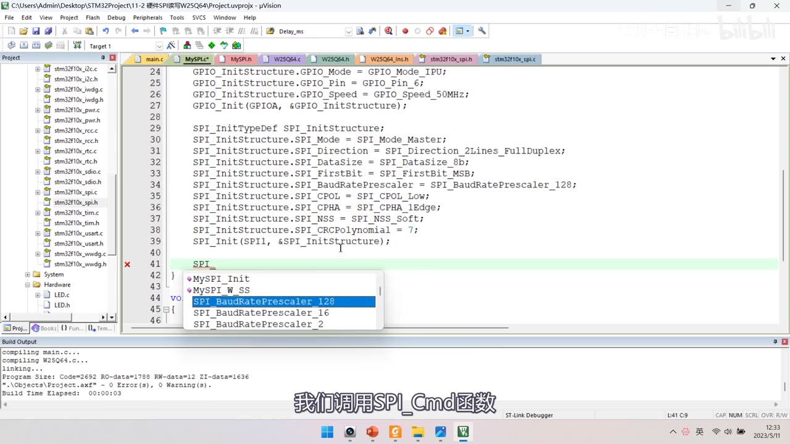
图 8：SPI_InitTypeDef 九项完整填写 + SPI_Init——SPI_InitTypeDef SPI_InitStructure;、SPI_Mode = SPI_Mode_Master、SPI_Direction = SPI_Direction_2Lines_FullDuplex、SPI_DataSize = SPI_DataSize_8b、SPI_FirstBit = SPI_FirstBit_MSB、SPI_BaudRatePrescaler = SPI_BaudRatePrescaler_128、SPI_CPOL = SPI_CPOL_Low、SPI_CPHA = SPI_CPHA_1Edge、SPI_NSS = SPI_NSS_Soft、SPI_CRCPolynomial = 7、SPI_Init(SPI1, &SPI_InitStructure)，下方补全框显示 MySPI_Init、MySPI_W_SS、SPI_BaudRatePrescaler_128 等；字幕「我们调用SPI_Cmd函数」
6. MySPI_SwapByte 硬件实现（四步）
uint8_t MySPI_SwapByte(uint8_t ByteSend)
{
while (SPI_I2S_GetFlagStatus(SPI1, SPI_I2S_FLAG_TXE) != SET); /* ① 等 TXE=1，发送寄存器空 */
SPI_I2S_SendData(SPI1, ByteSend); /* ② 写 DR→TDR，自动发波形 */
while (SPI_I2S_GetFlagStatus(SPI1, SPI_I2S_FLAG_RXNE) != SET); /* ③ 等 RXNE=1，接收完成 */
return SPI_I2S_ReceiveData(SPI1); /* ④ 读 DR，取回接收数据 */
}
- 对照 PPT 的非连续传输流程：① 等 TXE=1（发送寄存器为空）→ ② 软件写入数据至 SPI_DR → ③ 等 RXNE=1 → ④ 读取 SPI_DR——四步正好一一对应；
- 等待 TXE（①）：
while (SPI_I2S_GetFlagStatus(SPI1, SPI_I2S_FLAG_TXE) != SET);——也可以写成== RESET、或者前面加!，效果一样； - 写数据（②）：
SPI_I2S_SendData(SPI1, ByteSend)写 DR，数据进 TDR → 自动转入移位寄存器、波形自动产生——不需要再调用任何「启动传输」的函数，数据会自动经 MOSI 发出； - 等接收完成（③）：发送与接收是同步的——接收移位完成时 RXNE 置 1，此刻也代表发送移位完成，所以等 RXNE 就等于等整个字节的时序；
- 读数据（④）：
SPI_I2S_ReceiveData(SPI1)读 DR，返回值就是 RDR 里的数据，直接return； while死等没有加超时：只要 SPI 外设电路不损坏，TDR 有数据就一定会转入移位寄存器，不会卡死（不放心也可以自己加超时）。
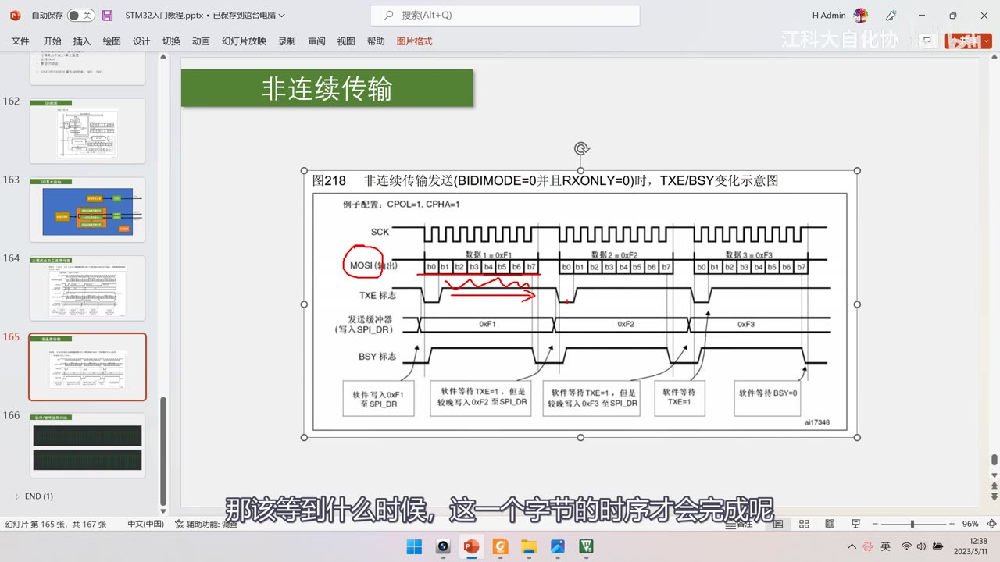
图 9：PPT「非连续传输」（图218，复习用）——红圈 MOSI(输出)、红笔划 TXE 标志区段，底部是四步操作框；字幕「那该等到什么时候，这一个字节的时序才会完成呢」
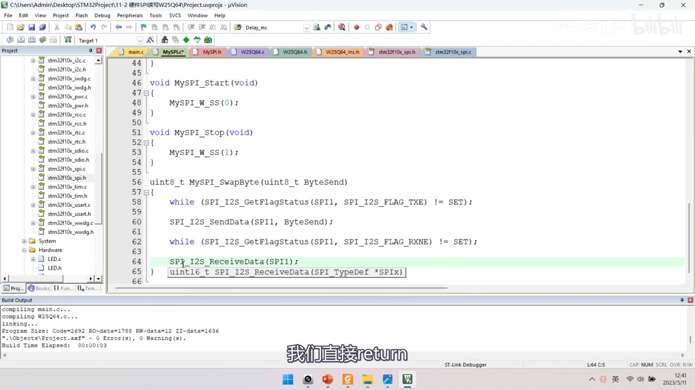
图 10：MySPI_SwapByte 写成硬件版——while (SPI_I2S_GetFlagStatus(SPI1, SPI_I2S_FLAG_TXE) != SET);、SPI_I2S_SendData(SPI1, ByteSend);、while (SPI_I2S_GetFlagStatus(SPI1, SPI_I2S_FLAG_RXNE) != SET);、SPI_I2S_ReceiveData(SPI1);（补全提示框显示 uint16_t SPI_I2S_ReceiveData(SPI_TypeDef *SPIx)）；上方是保留的 MySPI_Start（MySPI_W_SS(0);）与 MySPI_Stop（MySPI_W_SS(1);）；字幕「我们直接return」
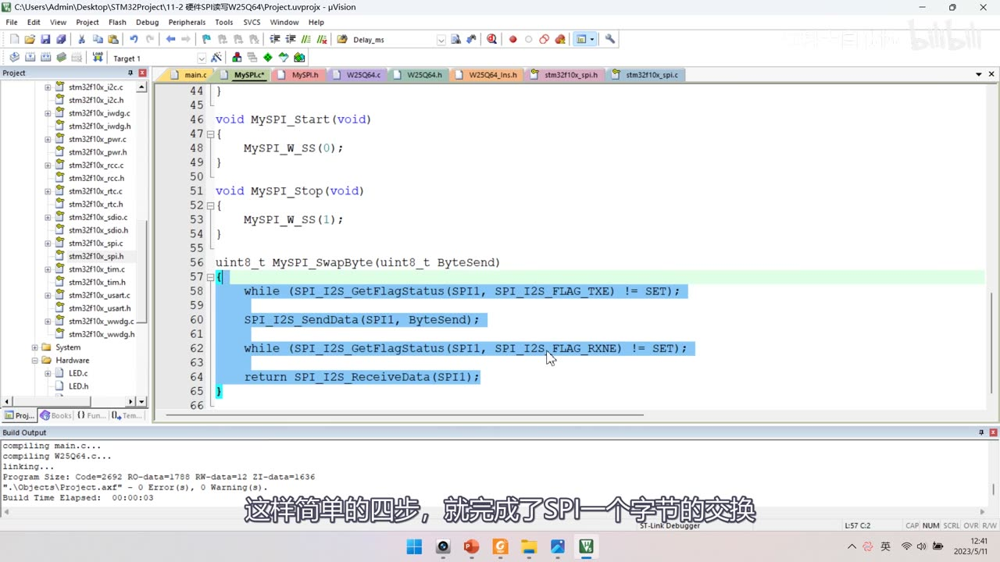
图 11：MySPI_SwapByte 四步完整版（整段蓝色高亮）——while (...TXE) != SET; → SPI_I2S_SendData(SPI1, ByteSend); → while (...RXNE) != SET; → return SPI_I2S_ReceiveData(SPI1);；字幕「这样简单的四步，就完成了SPI一个字节的交换」
7. 两个关键注意点
7.1 硬件 SPI 必须「先发送」才能「接收」
- SPI 是全双工的：只有往 TDR 写数据，才会触发移位、产生时钟；
- 所以只调用
SPI_I2S_ReceiveData时序是不会动的——想接收必须先发送； - 这也解释了「为什么只收数据时也要发一个占位字节」。
7.2 TXE/RXNE 不需要手动清标志
- 一开始作者也疑惑：手册图里写「TXE 由硬件设置并由软件清除」，那要不要手动调用
ClearFlag？ - 查手册 23.3.7 状态标志可知：
- 「当写入 SPI_DR 时，TXE 标志被清除」；
- 「读 SPI 数据寄存器可以清除此标志（RXNE）」；
- BSY 标志由硬件设置与清除（写无效）；
- 而我们的代码顺序正好是：等 TXE=1 → 写 DR（顺带清 TXE）、等 RXNE=1 → 读 DR（顺带清 RXNE）——所以完全不需要手动清标志；
- 对比：STM32 里大多数标志位（尤其中断标志）还是要手动清除的，只有少数能在执行顺序操作时顺便清除——具体要仔细看手册。
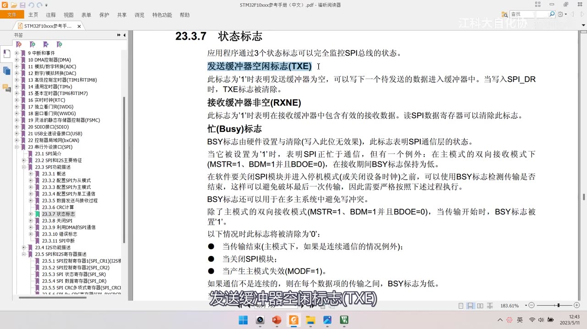
*图 12：参考手册「23.3.7 状态标志」——发送缓冲器空闲标志（TXE）：此标志为 1 时表明发送缓冲器为空，可以写下一个待发送数据；当写入 SPI_DR 时，TXE 标志被清除；接收缓冲器非空（RXNE）：此标志为 1 时表明接收缓冲器中含有有效的接收数据，读 SPI 数据寄存器可以清除此标志；忙（Busy）标志：BSY 由硬件设置与清除（写入无效），关闭 SPI 前可用它检测传输是否结束；左侧书签为 23.3.1～23.5.10；字幕「发送缓冲器空闲标志(TXE)」*
8. 编译下载与现象
- 代码改完编译下载（
Flash Load finished at 12:45:53）； - 现象：OLED 显示
MID:EF DID:4017、W:01 02 03 04、R:01 02 03 04——与软件 SPI 版本完全一致，说明硬件 SPI 改造成功； - 本集只验证这一组读写现象（没有重做上一集那四组实验：掉电保持、擦除变 FF、非擦除改写、跨页）；
- 作者评价：「这小节的任务还是比较轻松的」——因为分层做得好，只改底层通信层就行。
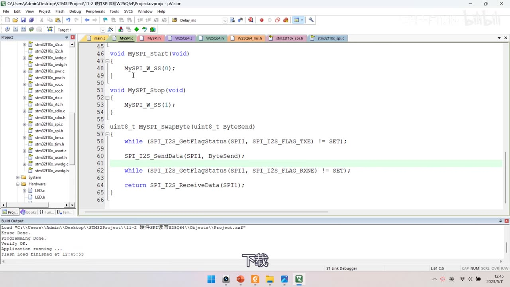
图 13：MySPI_SwapByte 完整版 + 下载记录（Load "…\11-2 硬件SPI读写W25Q64\Objects\Project.axf"、Flash Load finished at 12:45:53）；字幕「下载」
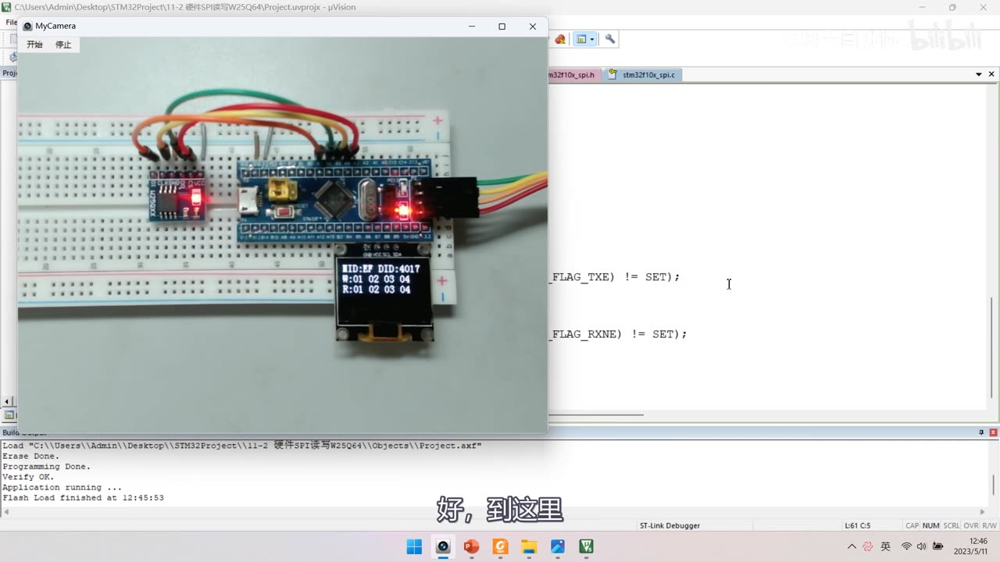
图 14：现象——面包板上 OLED 显示 MID:EF DID:4017 / W:01 02 03 04 / R:01 02 03 04，与软件 SPI 版本完全一致；字幕「好，到这里」
9. 软件 SPI vs 硬件 SPI（本集改造对照）
| 项 | 软件 SPI（11-1） | 硬件 SPI（11-2） |
|---|---|---|
| 通信层 | MySPI.c 手动翻转 GPIO |
MySPI.c 调用 SPI1 外设 |
| MySPI 模块 | 保留 | 保留（与 [10-2] 删 MyI2C 不同） |
| 引脚 | 任意 GPIO（接在 PA4～PA7） | 固定：SPI1 = PA4/PA5/PA6/PA7 |
| GPIO 模式 | Out_PP/Out_OD |
PA4 Out_PP + PA5/PA7 AF_PP + PA6 IPU |
| 时钟 | 程序延时 | SPI_BaudRatePrescaler（本集 128 → 72M/128） |
| 起始/终止 | W_SS(0)/W_SS(1) |
一样（SS 仍 GPIO 模拟） |
| 交换字节 | 手动翻转 8 次 | 等 TXE→SendData→等 RXNE→ReceiveData 四步 |
| 业务层 | 不变 | 一行不改 |
| 现象 | MID:EF DID:4017、W/R:01 02 03 04 |
完全相同 |
坑与易错点
- 别写成「删掉 MySPI 模块」：本集保留 MySPI，只删
W_SCK/W_MOSI/R_MISO三个函数（和 [10-2] 删 MyI2C 不同）。 - SPI1 是 APB2 外设：开时钟用
RCC_APB2Periph_SPI1，别写成 APB1。 - GPIO 模式分三种：PA4 通用推挽（软件控 SS）、PA5/PA7 复用推挽
AF_PP（外设控 SCK/MOSI）、PA6 上拉输入IPU（MISO）。 SPI_InitTypeDef是 9 个成员（不是 6 个），别漏SPI_NSS、SPI_CRCPolynomial。- 分频要按所挂总线算：SPI1 用 72M、SPI2 用 36M；128 分频 → 约 562.5kHz（推算值）。
- 模式 0 =
SPI_CPOL_Low+SPI_CPHA_1Edge；W25Q64 兼容模式 0 与模式 3。 - 硬件 SPI 必须先发送才能接收：只调
ReceiveData时序不会动。 - TXE/RXNE 不用手动清：写 DR 清 TXE、读 DR 清 RXNE（顺序操作顺带清除），别多写
ClearFlag。 - 写数据后不用调「启动传输」函数：写 DR 后自动转入移位寄存器、自动产生波形。
- SS 仍用 GPIO 模拟：
SPI_NSS_Soft+MySPI_W_SS，硬件 NSS 用不上。 - 重映射脚（PA15/PB3/PB4/PB5）默认是 JTAG：要用得先解除调试端口复用，本集不用。
- while 死等没加超时：外设不坏不会卡死，但不放心可以自己加超时。
- W25Q64 业务层不要动：本集只改通信层，上层一行不改——这正是分层的价值。
- 本集只验证一组现象：没有重做上一集的四组实验。
时间轴
| 时间 | 内容 |
|---|---|
| 0:02 | 本小节学习硬件 SPI 的代码部分 |
| 0:05 | 先看本次代码的接线图 |
| 0:07 | 打开 11-2 硬件SPI读写W25Q64 的图片 |
| 0:14 | 这个是硬件 SPI 的接线图 |
| 0:16 | 线路连接和之前软件 SPI 是一样的 |
| 0:20 | 因为之前软件 SPI 的接线放在了硬件 SPI 的引脚上 |
| 0:24 | 所以这里线路就不用变化 |
| 0:26 | 软件 SPI 的引脚可以任意选择 |
| 0:32 | 硬件 SPI 的引脚怎么选择呢 |
| 0:34 | 还是得看一下引脚定义表 |
| 0:37 | 凡涉及 STM32 内部硬件外设的引脚 |
| 0:40 | 基本都得参考这个表，不能任意选择 |
| 0:43 | 因为硬件没有软件那么灵活 |
| 0:45 | 在默认复用功能这一栏 |
| 0:49 | 找一下 SPI 相关的引脚 |
| 0:56 | SPI1 的 NSS 复用在了 PA4 |
| 1:00 | SPI1 的 SCK 复用在了 PA5 |
| 1:04 | MISO 复用在了 PA6 |
| 1:06 | MOSI 复用在了 PA7 |
| 1:12 | 所以要用 SPI1 就得接在 PA4～PA7 这四个引脚 |
| 1:19 | NSS 上小节说过，一般可以继续用软件模拟 |
| 1:23 | 所以 NSS 没必要必须接在 PA4 |
| 1:26 | 其他三个引脚就必须是 PA5、PA6、PA7 |
| 1:30 | 这就是 SPI1 的引脚复用关系 |
| 1:36 | 下面这一块是 SPI2 的引脚 |
| 1:39 | SPI2 的 NSS 复用在了 PB12 |
| 1:44 | SCK 是 PB13 |
| 1:46 | MISO 是 PB14 |
| 1:48 | MOSI 是 PB15 |
| 1:53 | 要用 SPI2 就必须选这些引脚 |
| 1:55 | 这就是 SPI2 的引脚复用关系 |
| 1:58 | 最后在重定义这一栏 |
| 2:00 | SPI1 还可以引脚重定义 |
| 2:04 | 如果 SPI1 原来的 PA5 正好被别的资源占用 |
| 2:14 | 重定义之后 SPI1 的 NSS 转移到 PA15 |
| 2:18 | SCK 转移到 PB3 |
| 2:21 | MISO 转移到 PB4 |
| 2:24 | MOSI 转移到 PB5 |
| 2:27 | 这就是重定义的功能 |
| 2:28 | 可以在引脚资源冲突的情况下转移外设引脚 |
| 2:34 | 这里还要提醒：PA15、PB3、PB4 没有加粗 |
| 2:39 | 因为它们默认是作为 JTAG 的调试端口使用 |
| 2:43 | 要用它们原本的 GPIO 功能 |
| 2:45 | 或者重定义的外设引脚功能 |
| 2:49 | 都得先解除调试端口的复用 |
| 2:55 | 解除方法在视频 6-4 那 |
| 3:01 | 这些就是 SPI1 和 SPI2 引脚的复用情况 |
| 3:05 | 我们计划使用 SPI1 |
| 3:07 | 所以 SCK 接 PA5、MOSI 接 PA7、MISO 接 PA6 |
| 3:14 | NSS 可以接 PA4，也可以接到其他位置 |
| 3:20 | 看一下接线图 |
| 3:21 | PA5 是 SPI1 的 SCK，接到 CLK 引脚 |
| 3:30 | PA6 是 MISO，接到 DO 引脚 |
| 3:31 | PA7 是 MOSI，接到 DI 引脚 |
| 3:36 | 这几个引脚互相不要搞混了 |
| 3:39 | NSS 就接到 PA4，这也是可以的 |
| 3:43 | VCC 和 GND 接上电源给模块供电 |
| 3:47 | 这就是接线图 |
| 3:50 | 面包板接线和之前软件 SPI 是一样的 |
| 3:57 | 硬件线路部分完成 |
| 3:59 | 接下来就是软件程序 |
| 4:00 | 回到工程文件夹 |
| 4:03 | 复制一下软件 SPI 的工程 |
| 4:06 | 改一下名字 |
| 4:08 | 叫 11-2 硬件SPI读写W25Q64 |
| 4:13 | 还是在软件 SPI 的基础上更改 |
| 4:16 | 打开工程先编译 |
| 4:28 | 我们的任务就是修改底层的 MySPI.c 文件 |
| 4:33 | 和时序的执行步骤 |
| 4:35 | 由软件实现改成硬件实现 |
| 4:38 | 之后基于通信层的这些业务代码不需要修改 |
| 4:42 | 只是调用底层的通信函数来实现功能 |
| 4:53 | 具体通信怎么实现是影响不到上层代码的 |
| 4:55 | 这就是代码隔离、封装的好处 |
| 4:59 | 因为 SPI 的硬件实现我们计划用非连续传输方案 |
| 5:02 | 这个方案非常简单，也容易封装 |
| 5:05 | 所以还是保留这个 MySPI 的模块 |
| 5:08 | 直接在这里更改代码即可 |
| 5:11 | 我们是直接把 MyI2C 的模块移除了 |
| 5:16 | 模块要不要移除、分层还是都放一起 |
| 5:21 | 得看你对工程的规划 |
| 5:24 | 我觉得保留这个 MySPI 模块非常方便 |
| 5:30 | 那如何修改呢 |
| 5:33 | 首先 SS 引脚还使用软件模拟 |
| 5:36 | 所以写 SS 的函数留着 |
| 5:39 | 软件读写 SPI 通信引脚的函数我们可以删掉 |
| 5:48 | MySPI 初始化这里替换为 SPI 外设的初始化 |
| 5:54 | 删到这里就行了，上面这些等会还能用到 |
| 5:59 | 产生起始和停止信号的这两个可以留着 |
| 6:04 | 最后交换字节函数里面的内容改掉 |
| 6:09 | 这样软件 SPI 操作时序的部分就删掉了 |
| 6:12 | 接着写上硬件 SPI 的代码就行 |
| 6:15 | 硬件 SPI 的代码实际上就是两个部分 |
| 6:20 | 写上 SPI 外设的初始化代码 |
| 6:23 | 第二部分在交换字节这里 |
| 6:32 | 任务清楚了，看这个 SPI 基本结构 |
| 6:35 | 对于 SPI 初始化的流程我们分为几步 |
| 6:42 | 第一步开启 SPI 和 GPIO 的时钟 |
| 6:43 | 第二步初始化 GPIO |
| 6:45 | 其中 SCK 和 MOSI 是硬件外设控制的输出信号 |
| 6:51 | 所以配置为复用推挽输出 |
| 6:53 | MISO 是硬件外设的输入信号 |
| 6:56 | 我们可以配置为上拉输入 |
| 6:58 | 因为输入设备可以有多个，不存在复用输入 |
| 7:07 | 最后还有 SS 引脚 |
| 7:09 | SS 是软件控制的输出信号 |
| 7:12 | 所以配置为通用推挽输出 |
| 7:15 | 这就是 GPIO 口的初始化配置 |
| 7:17 | 第三步配置 SPI 外设，结构体选参数即可 |
| 7:27 | 比如 8 位/16 位数据帧、高位先行/低位先行 |
| 7:35 | 主机还是从机，就都配置好了 |
| 7:39 | 第四步开关控制，调用 SPI_Cmd 使能即可 |
| 7:42 | 这就是初始化的流程 |
| 7:44 | 初始化之后参考这个时序来执行运行控制的代码 |
| 7:49 | 这样就能产生交换字节的时序 |
| 7:54 | 涉及的具体函数主要就是写 DR、读 DR |
| 7:56 | 和获取状态标志位这些 |
| 8:03 | 下面看 SPI 外设相关的库函数 |
| 8:06 | 就是这个 spi.c 和 spi.h |
| 8:11 | 打开 spi.h 看最后的函数声明 |
| 8:15 | 这些就是 SPI 的库函数 |
| 8:17 | 很多函数都带了个 I2S，因为 SPI 和 I2S 共用 |
| 8:25 | 就当它不存在就行了 |
| 8:32 | 比如 SPI_I2S_DeInit 恢复缺省配置 |
| 8:38 | SPI_Init 初始化、SPI_StructInit 结构体初始化 |
| 8:41 | SPI_Cmd 外设使能 |
| 8:44 | SPI_I2S_ITConfig 中断使能 |
| 8:47 | SPI_I2S_DMACmd DMA 使能 |
| 8:52 | 比较重要的两个函数是 SPI_Init 和 SPI_Cmd |
| 8:59 | 这个函数实际上就是写 DR 数据寄存器 |
| 9:07 | 转到定义可以看到它把 Data 赋值给 DR |
| 9:11 | 就是写数据到发送数据寄存器 TDR |
| 9:16 | 这个实际上就是读 DR 数据寄存器 |
| 9:23 | 把 DR 读出来直接 return 返回 |
| 9:27 | 所以返回值就是接收数据寄存器 RDR |
| 9:36 | 还有比如 NSS 引脚的配置 |
| 9:39 | DataSize 就是 8 位或 16 位数据帧的配置 |
| 9:43 | 然后 CRC 校验的 |
| 9:45 | 半双工时双向线的方向配置 |
| 9:48 | 这些函数用得很少，了解即可 |
| 9:54 | 最后 4 个函数是获取和清除标志位的 |
| 9:57 | 我们主要会用 GetFlagStatus 获取 TXE 和 RXNE |
| 10:04 | 再配合写 DR 和读 DR 的函数 |
| 10:06 | 这样就能控制时序的产生了 |
| 10:09 | 库函数就看到这里 |
| 10:10 | 目前铺垫的工作完成了，开始写程序 |
| 10:15 | 首先是初始化函数里面的代码 |
| 10:19 | 我们要开启 SPI 和 GPIO 的时钟 |
| 10:22 | 目前使用的 GPIO 都是 A 端 |
| 10:25 | 所以开启 GPIOA 的时钟 |
| 10:28 | 之后我们计划使用 SPI1 这个外设 |
| 10:31 | SPI1 也是 APB2 的外设 |
| 10:42 | 所以可以复制，选择这里的 SPI1 |
| 10:44 | 第一步开启时钟就完成了 |
| 10:47 | 接着第二步配置相应的 GPIO |
| 10:50 | 首先 SS 从机选择引脚是 PA4 |
| 10:55 | 我们计划还是使用软件模拟 |
| 10:57 | 所以 PA4 还是配置为通用推挽输出 |
| 11:04 | 第二步是 SCK 和 MOSI |
| 11:07 | 我们要配置为复用推挽输出 |
| 11:15 | SCK 和 MOSI 分别是 PA5 和 PA7 |
| 11:20 | 所以代码里我们选择 Pin5 和 Pin7 |
| 11:28 | 配成复用推挽输出 |
| 11:37 | MISO 要配置为上拉输入模式 |
| 11:45 | MISO 是 PA6 引脚 |
| 11:50 | 所以这里选择 Pin6 |
| 11:53 | 选择 IPU（Input Pull Up） |
| 12:00 | GPIO 的模式就配置好了 |
| 12:01 | 这个模式种类还是比较多的 |
| 12:08 | 接着第三步初始化 SPI 外设 |
| 12:11 | 这个函数名称写多了就能记住了 |
| 12:15 | 初始化肯定就是 SPI_Init 了 |
| 12:19 | 第一个参数指定 SPI1 |
| 12:22 | 第二个是初始化结构体 |
| 12:26 | 我们在上面定义结构体变量 SPI_InitTypeDef |
| 12:31 | 变量名给个 SPI_InitStructure |
| 12:36 | 之后把结构体成员都引出来 |
| 12:42 | 最后把结构体的地址传进去 |
| 12:48 | 根据结构体的参数来自动配置相应的寄存器 |
| 12:50 | 这就是 SPI 初始化的步骤 |
| 12:52 | 结构体变量的顺序可以随意 |
| 13:02 | SPI_Mode 选择 SPI 的模式 |
| 13:06 | 这个参数决定当前设备是主机还是从机 |
| 13:18 | Master 指定当前设备为主机 |
| 13:21 | Slave 指定当前设备为从机 |
| 13:24 | 那我们肯定是选择主机 |
| 13:26 | 这就是 SPI_Mode |
| 13:28 | 之后是 SPI_Direction |
| 13:32 | 把参数列表弄出来看看 |
| 13:44 | 可选的参数有 4 个 |
| 13:47 | 单线半双工的接收模式 |
| 13:50 | 单线半双工的发送模式 |
| 13:53 | 和双线的只接收模式 |
| 13:56 | 这个参数用来配置 SPI 裁剪引脚 |
| 14:05 | 我们选双线全双工这个参数即可 |
| 14:08 | 然后是 DataSize 配置 8 位还是 16 位数据帧 |
| 14:12 | FirstBit 配置高位先行还是低位先行 |
| 14:16 | 最常用的就是 8 位数据帧、高位先行 |
| 14:19 | 所以配置就很简单了 |
| 14:22 | DataSize 选择 8bit |
| 14:31 | FirstBit 选择 MSB，高位先行 |
| 14:34 | 这两个参数就配置好了 |
| 14:36 | 接下来是波特率预分频器 |
| 14:39 | 这个可以用来配置 SCK 时钟的频率 |
| 14:45 | 这里有这么多分频系数，2、4、8…共 8 种 |
| 14:55 | PCLK 的频率除以分频系数 |
| 15:00 | 分频系数越大，SCK 频率越小、传输越慢 |
| 15:04 | 这个可以根据实际需求来选 |
| 15:06 | 这里点的参数比如 128 |
| 15:10 | 目前 SCK 的时钟频率就是 |
| 15:18 | 我们这是 SPI1 的外设 |
| 15:21 | 所以是 72MHz/128 计算频率 |
| 15:24 | 如果是 SPI2 的外设就要按 36MHz 算 |
| 15:31 | 因为 SPI1 是 APB2 的外设 |
| 15:37 | 那这就是时钟频率 |
| 15:39 | 然后下面两个参数 |
| 15:40 | 这两个就比较熟悉了吧 |
| 15:44 | 这是用来配置 SPI 模式的 |
| 15:49 | CPOL 时钟极性 |
| 15:52 | 一个是 High，默认高电平 |
| 15:55 | 一个是 Low，默认低电平 |
| 15:57 | High 其实就是 CPOL=1 |
| 16:00 | Low 其实就是 CPOL=0 |
| 16:03 | 我们计划选择 SPI 模式 0 |
| 16:09 | 所以选择 Low 这个参数 |
| 16:10 | 然后 CPHA 时钟相位 |
| 16:13 | 这里也是两个参数 |
| 16:15 | 一个是 1Edge，就是第一个边沿开始采样 |
| 16:19 | 一个是 2Edge，就是第二个边沿开始采样 |
| 16:22 | 1Edge 就是 CPHA=0 |
| 16:25 | 2Edge 就是 CPHA=1 |
| 16:28 | 这些 SPI 设备都只说第几个边沿采样 |
| 16:32 | 而不说第几个边沿输出数据 |
| 16:42 | 这里我说的移入就相当于他们说的采样 |
| 16:48 | 这里选择 SPI 模式 0、CPHA=0，所以选 1Edge |
| 16:52 | 这就是 SPI 4 种模式的选择 |
| 16:55 | 选择模式 0 和模式 3 都可以 |
| 16:58 | 我们目前选择的是模式 0 |
| 17:09 | NSS 选择 Soft，软件 NSS 模式 |
| 17:11 | 我们计划用 GPIO 模拟这个外设的 NSS 引脚 |
| 17:19 | 一般选择软件 NSS 就行了，不用过多关心 |
| 17:24 | 最后是 CRC 校验的多项式 |
| 17:27 | 这里参数需要我们填，填多少都可以 |
| 17:32 | 反正我们不用，默认值 7 就行了 |
| 17:37 | 我们这个结构体的参数就选好了 |
| 17:44 | 大多数参数基本上不用改 |
| 17:46 | 需要改的可能也就是这 3 个 |
| 17:54 | 那初始化结束，第四步使能 SPI 外设 |
| 17:59 | 我们调用 SPI_Cmd 函数 |
| 18:06 | 参数是 SPI1、ENABLE |
| 18:07 | 这样 SPI 外设就准备就绪了 |
| 18:09 | 开启 SPI 之后还要做一件事 |
| 18:16 | MySPI_W_SS(1) 默认给 SS 输出高电平 |
| 18:19 | 默认是不选中从机的 |
| 18:21 | 我们整个 SPI 初始化函数就是这么多内容 |
| 18:26 | 初始化之后 SPI 外设就绪 |
| 18:29 | 我们就可以来完成交换字节的函数了 |
| 18:32 | 当我们调用这个交换字节的函数 |
| 18:44 | 怎么生成呢？看 PPT 这个图 |
| 18:47 | 通常情况下就是 4 步 |
| 18:49 | 第一步等待 TXE 为 1，发送寄存器为空 |
| 18:53 | 如果发送寄存器不为空就先不要急着写 |
| 19:00 | 第二步就是调用函数 SPI_I2S_GetFlagStatus |
| 19:13 | 显然我们要检测 SPI_I2S_FLAG_TXE |
| 19:20 | 那要实现等待 TXE 的效果 |
| 19:23 | 我们就还是套 while |
| 19:26 | 如果读取 TXE 标志位它 != SET |
| 19:30 | while 条件为真就一直等 |
| 19:33 | 这样就能实现等待 TXE 为 1 的功能 |
| 19:37 | 另外这里你也可以写 == RESET 或者前面加感叹号 |
| 19:44 | 这些写法都行，都可以实现功能 |
| 19:49 | 这个 while 循环只要 SPI 外设电路不损坏 |
| 19:51 | 不会一直处于卡死的状态 |
| 19:54 | 因为只要 TDR 有数据就会自动转入移位寄存器 |
| 19:59 | 不会受外部电路影响 |
| 20:05 | 我们就不加超时等待的机制了 |
| 20:08 | 当然你要是不放心，加也完全没问题 |
| 20:12 | 等待 TXE 为 1 的代码就是这样 |
| 20:17 | 第二步看 PPT，执行软件写入数据至 SPI_DR |
| 20:22 | 如何写入数据呢？刚才看过库函数 |
| 20:25 | 显然是调用 SPI_I2S_SendData |
| 20:35 | 第二个参数要写入到 DR，也就是 TDR 的数据 |
| 20:42 | 我们要把 ByteSend 参数传进去 |
| 20:46 | ByteSend 写入到 TDR |
| 20:50 | ByteSend 自动转入移位寄存器 |
| 20:55 | 移位寄存器有数据了，时序波形就会自动产生 |
| 20:57 | 不需要我们再调用什么函数让它开始传输 |
| 21:02 | 我们只管写入数据到 TDR |
| 21:04 | 之后转到移位寄存器生成波形，这个过程自动完成 |
| 21:10 | ByteSend 这个数据就会通过 MOSI 发出去 |
| 21:20 | 然后因为是非连续传输 |
| 21:23 | 时序产生的这段时间我们就不提前写下一个 |
| 21:28 | 直接死等过去就行 |
| 21:31 | 那等到什么时候这个字节的时序才会完成呢 |
| 21:36 | 这里可以注意到 MISO 还会移位进行接收 |
| 21:41 | 发送和接收是同步的 |
| 21:47 | 接收移位完成了也就代表发送移位完成了 |
| 21:53 | 接收移位完成时会置标志位 RXNE |
| 21:57 | 我们只需等待 RXNE 出现就行了 |
| 22:07 | 回到代码，第三条等待标志位 RXNE |
| 22:10 | 等 RXNE 为 1 了表示收到了 |
| 22:14 | 同时也表示发送时序产生完成了 |
| 22:19 | 既然 RXNE=1 了，第四步就是读取 DR |
| 22:22 | 把交换接收的数据读出来 |
| 22:28 | 所以代码就是调用 SPI_I2S_ReceiveData 读取 DR |
| 22:38 | 这个函数有返回值，返回值就是 RDR 接收的数据 |
| 22:41 | 我们直接 return 出去 |
| 23:18 | 这样简单的四步就完成了 SPI 一个字节的交换 |
| 23:19 | 在这里面我们并不需要像软件 SPI 那样 |
| 23:21 | 手动给 SCK、MOSI 置高低电平 |
| 23:28 | 这些工作硬件电路会自动帮我们完成 |
| 23:30 | 另外还有个注意事项 |
| 23:33 | 这里的硬件 SPI 必须是发送的同时接收 |
| 23:37 | 要想接收必须得先发送 |
| 23:39 | 因为只有你给 TDR 写东西 |
| 23:43 | 只调用接收函数那时序是不会动的 |
| 23:48 | 还有个注意事项就是标志位是否会自动清除 |
| 23:54 | 我在手册这个图上看到这里写的是 |
| 23:58 | TXE 标志由硬件设置并由软件清除 |
| 24:02 | 下面 RXNE 写的也是由软件清除 |
| 24:07 | 这个由软件清除就比较迷惑 |
| 24:12 | 还需要我们手动调用 ClearFlag 函数清除吗 |
| 24:16 | 实际上这个并不需要我们手动清除 |
| 24:18 | 我们可以参考手册 23.3.7 状态标志 |
| 24:25 | 发送缓冲器空闲标志 TXE |
| 24:35 | 当写入 SPI_DR 时 TXE 标志被清除 |
| 24:42 | 所以在程序这里，等待 TXE 为 1 之后写的就会清除它 |
| 24:50 | 因为写入 DR 时会顺便执行清除 TXE 的操作 |
| 24:54 | 而代码就正好是写入 DR |
| 25:03 | 然后 RXNE 标志位也是读 SPI 数据寄存器清除 |
| 25:08 | 在程序这里等待 RXNE 为 1 之后的读取就会清除它 |
| 25:16 | 其实之前的串口和 I2C 都是这样 |
| 25:23 | 写入 DR 顺便清除 TXE，读取 DR 顺便清除 RXNE |
| 25:25 | 不需要额外手动清除这些标志位 |
| 25:32 | 因为 STM32 中大多数标志位还是要手动清除的 |
| 25:36 | 比如中断标志位 |
| 25:43 | 而少部分标志位在执行顺序操作时可以顺便清除 |
| 25:54 | 这个程序其实就已经写完了 |
| 25:57 | 整体看下来应该也还好理解 |
| 26:02 | 那我们就来验证能不能和软件 SPI 一样 |
| 26:05 | 读写 W25Q64 的功能 |
| 26:14 | 读取 ID 号，EF、4017 |
| 26:17 | 下面写入 01、02、03、04 |
| 26:19 | 读取也是 01、02、03、04 |
| 26:21 | 这说明我们硬件 SPI 的程序 |
| 26:29 | 这小节的任务还是比较轻松的 |
| 26:32 | 那我们 SPI 的课程到这里也就全部结束了 |
存疑
- 本集文本来自画面硬字幕的 OCR（PP-OCRv4，source=subtitle-ocr，540 段），不是 ASR。错字主要是
SPI→ 「SPL/SPl」（12 处）、MySPI→ 「MvSPI/MvSPL」、推挽→ 「推换」（3 处）、引脚→ 「弓脚」（2 处）、I2C→ 「12C/2C」、数据→ 「数居」、寄存器→ 「寄存哭」；并混入编译/下载输出（Build Time Elapsed、Flash Load finished at …）——已按画面/上下文校正。 SPI_InitTypeDef是 9 个成员（不是 6 个）：SPI_Mode、SPI_Direction、SPI_DataSize、SPI_FirstBit、SPI_BaudRatePrescaler、SPI_CPOL、SPI_CPHA、SPI_NSS、SPI_CRCPolynomial；本笔记取值以 f_00155（完整帧）为准——f_00135/f_00145 是未填完的中间态，未采用。- 本集保留 MySPI 模块（与 [10-2] 硬件 I2C 那集「删除 MyI2C 模块」不同）：只删
MySPI_W_SCK/W_MOSI/R_MISO，保留W_SS/Start/Stop；作者解释了「模块要不要移除、分层还是放一起，取决于工程规划」。 - SCK 频率是推算值：口述只说「SPI1 所以是 72MHz/128 计算频率」，没有念出结果——本笔记标注「按公式推算约 562.5kHz」；若换 SPI2 则按 36MHz 算。
- 模式 0：
SPI_CPOL_Low（CPOL=0）+SPI_CPHA_1Edge（CPHA=0）；作者说明模式 0 与模式 3 都兼容 W25Q64，本集选模式 0。 - 只发也会收：硬件 SPI 是「发送的同时接收」，必须先写 TDR 才会触发时序，只调
ReceiveData时序不会动。 - TXE/RXNE 由顺序操作顺带清除（写 DR 清 TXE、读 DR 清 RXNE），不需要手动
ClearFlag——依据是手册 23.3.7（图 12）。 while死等未加超时：作者说外设不坏就不会卡死，不放心可以自己加——笔记照写并注明「本代码未加超时」。- 重映射（PA15/PB3/PB4/PB5）只介绍未使用：这些脚默认是 JTAG 调试端口，要用需先解除复用（见视频 6-4），本集未实际配置。
- 现象只有一组：
MID:EF DID:4017、W:01 02 03 04、R:01 02 03 04，没有重做 [11-3] 的四组实验（掉电保持/擦除 FF/非擦除改写/跨页）。 - 片尾 26:34「那我们 SPI 的课程到这里也就全部结束了」（transcript 末段），无下节预告。